终端复用器这个圈子其实并不大，但有个项目拿到了 32000+ Star。
要知道 tmux 已经称霸十几年了，居然还能杀出一个新选手。
它叫 Zellij，2020 年才起步，用 Rust 写的。
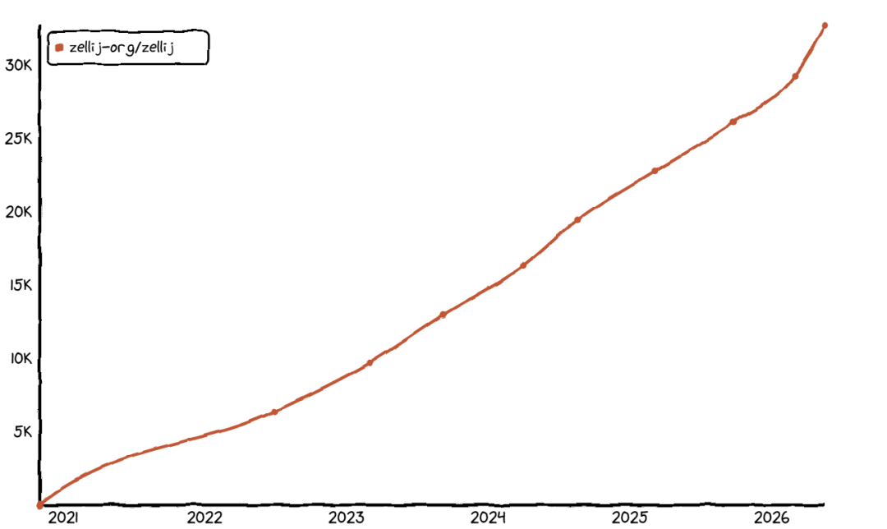
它的定位是自带电池的终端工作区，翻译成人话就是：开箱即用，不用折腾配置就能直接干活。
说实话 tmux 我也用了挺久，功能确实强。
但有个痛点一直很折磨人——隔段时间不用，快捷键就忘得差不多了，每次都得重新翻文档、重新捋前缀键的逻辑。
刷到 Zellij，才发现终端复用器可以这么顺手。
启动后界面长这样
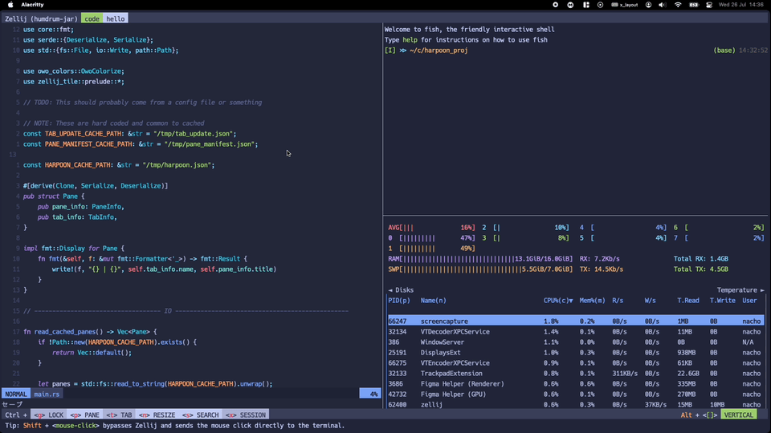
顶部标签页栏显示会话以及标签页，底部状态栏直接把快捷键提示贴出来——想分屏底部就写着 Alt+n，想切标签页 Ctrl+t。
所见即所得，新手几分钟就能上手。
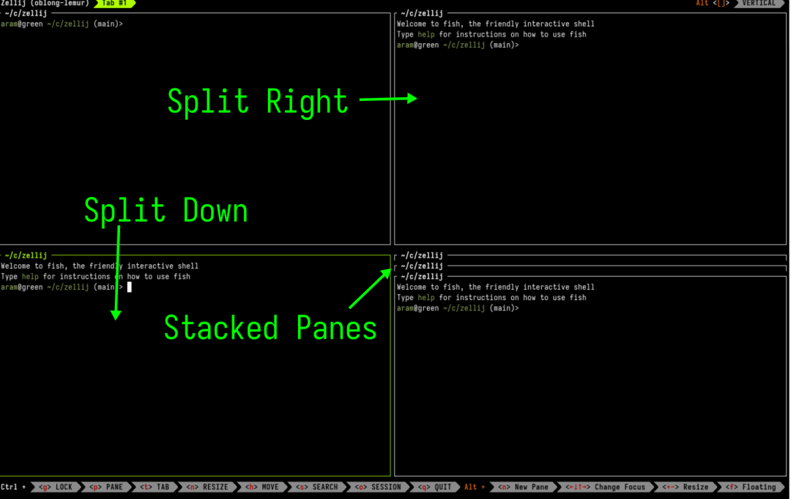
核心功能全给你配好了
01 会话自动保存。
你把终端关掉或者重启系统，它会自动把会话保存下来。
默认每 10 秒就会把状态保存到磁盘当中，下次启动时直接进行读取，工作区能够恢复到上次关闭时的状态。
02 为不同任务创建独立会话。
很多人经常要同时处理多个任务——写前端、跑测试各开一个会话。
想切过去看看测试跑没跑完？
Ctrl+o+w 唤出会话管理器，点一下就过去了。各会话互不干扰，切回来的时候状态还在。
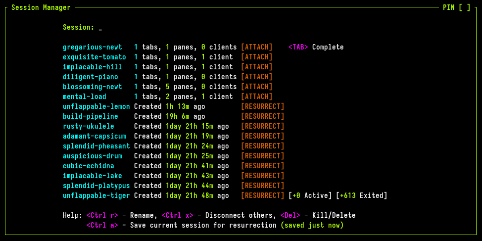
03 悬浮的小窗口。
有时候你不想把屏幕切得七零八落，临时切个悬浮窗口就可以解决。
想用的时候直接调出来，用完随手关掉，不耽误正常干活。
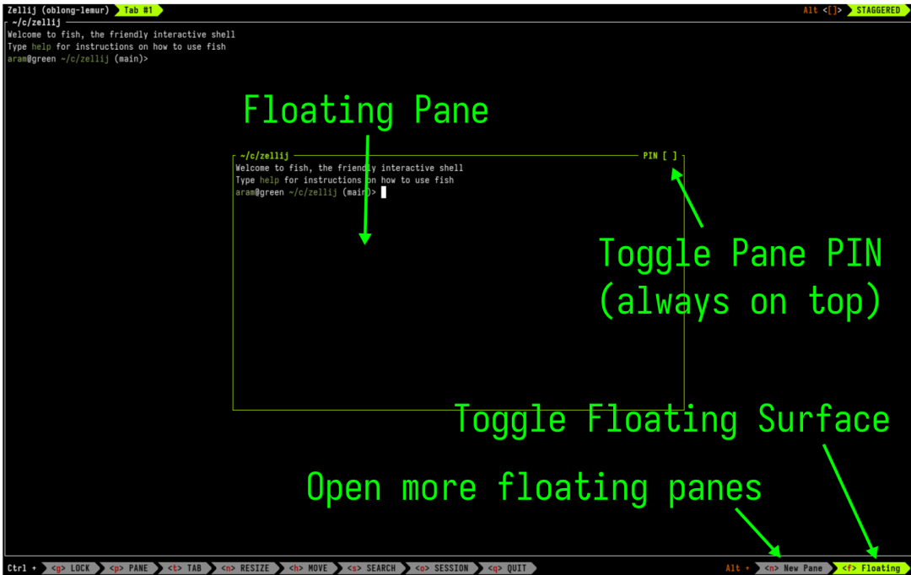
键盘党也有快捷键：按 Ctrl+p+e 直接把面板弹成悬浮窗，Ctrl+p+i 一键置顶锁定。
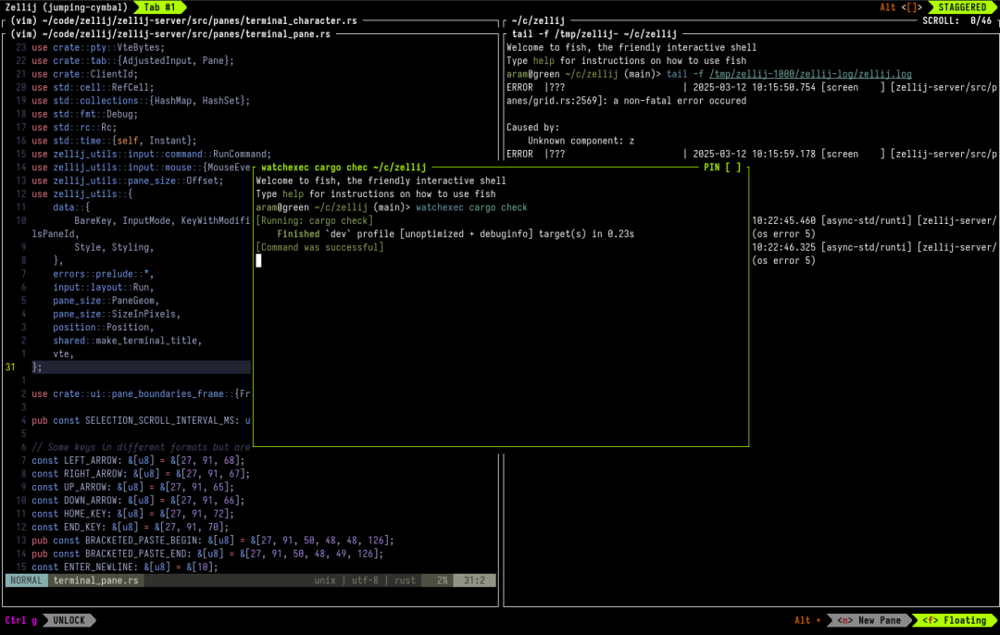
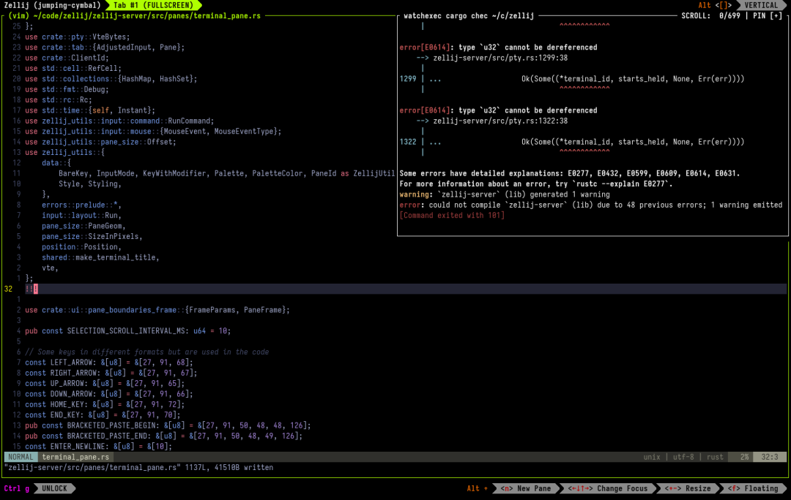
04 编辑滚动缓冲区：tmux 做不到的事。
这个可能是 tmux 用户最羡慕的——直接编辑终端的滚动缓冲区。
用过终端的人都知道，有时候命令输出很长，想复制或者搜索之前的内容，只能借助鼠标笨拙地往上滚。
tmux 的 copy mode 虽然能够解决部分问题，但体验还是不够好。
Zellij 的做法是按 Ctrl+s 然后按 e，它就会调用用系统默认的编辑器也就是 $EDITOR 来打开当前窗格的整个滚动缓冲区。
你可以像编辑普通文本文件一样去搜索、复制以及修改，关掉编辑器之后回到终端。
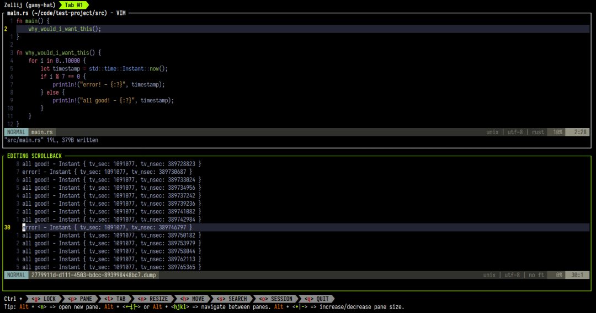
05 堆叠窗格：多个窗格堆在一起。
堆叠窗格则是把多个窗格垂直堆叠在同一位置，用方向键来进行切换。
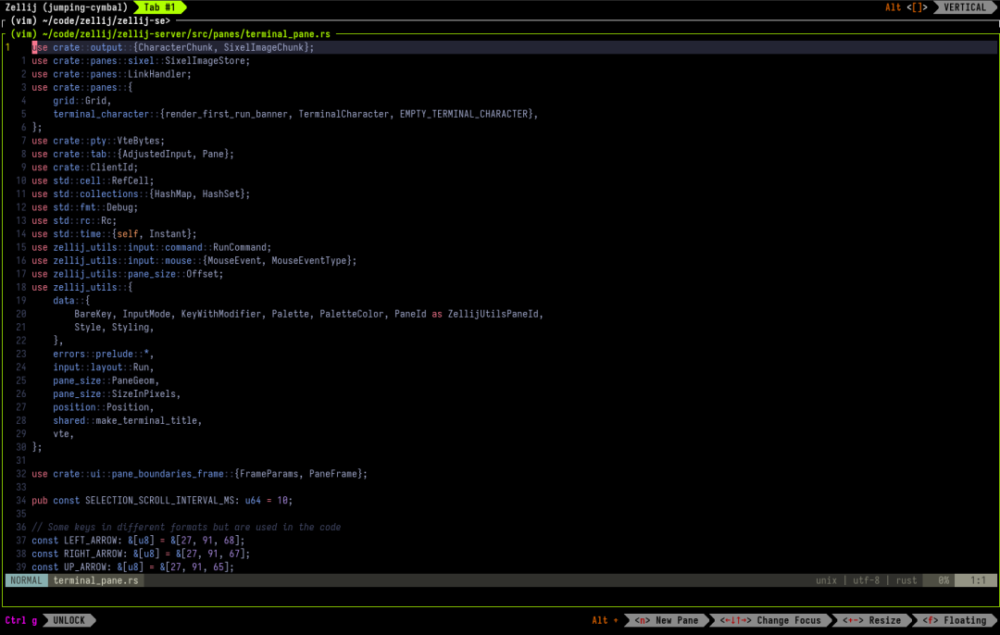
同时监控多个进程，跑测试、看日志、开编辑器，都堆在一起按上下键切换，不用把屏幕切碎片。
窗格大小调整也非常直观：Alt++ 放大当前窗格 30%，Alt-- 缩小，按住不放就能连续调整。
不需要记什么 resize keybinding，也不用手动输入像素值。
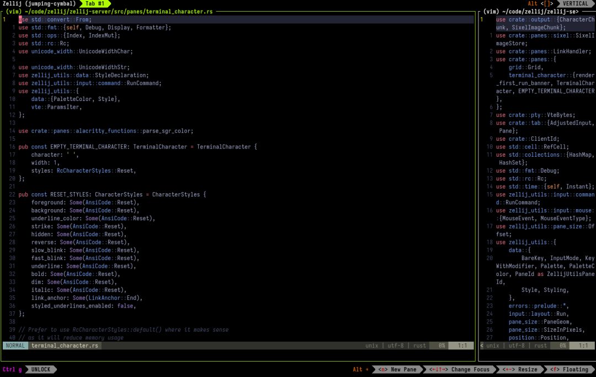
06 多人协作：远程结对编程神器。
多用户同时连接同一会话，每人拥有独立光标，实时看到对方的操作。
远程结对编程不用忍受屏幕共享的延迟问题，两个人直接在同一个终端里协作。
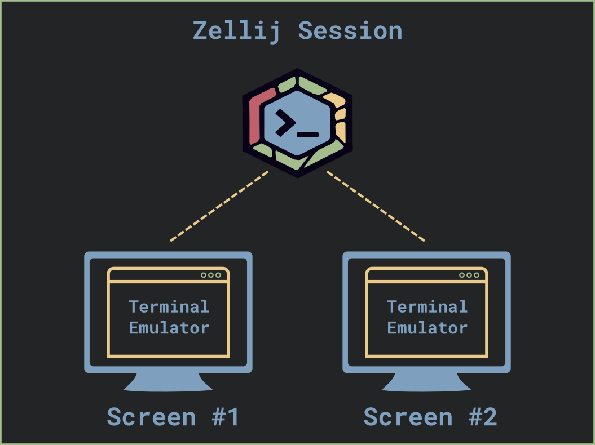
07 还可以浏览器访问终端。
内置 Web 服务器，浏览器里直接访问终端会话。注意需要配置 HTTPS 以及认证令牌。
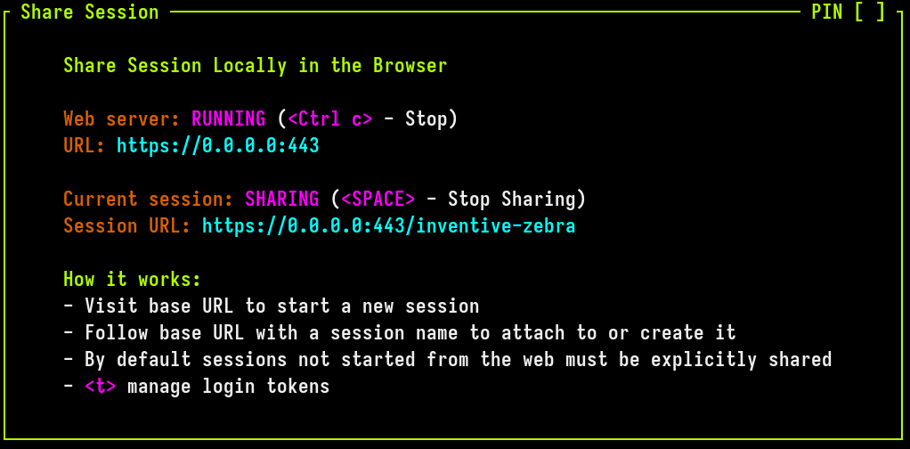
08 插件系统：基于 WebAssembly。
用任何能编译成 WASM 的语言写插件，Rust 有一流 SDK 支持。
Zellij 自带的会话管理器、文件选择器都是插件，.wasm 文件独立分发不污染主程序。
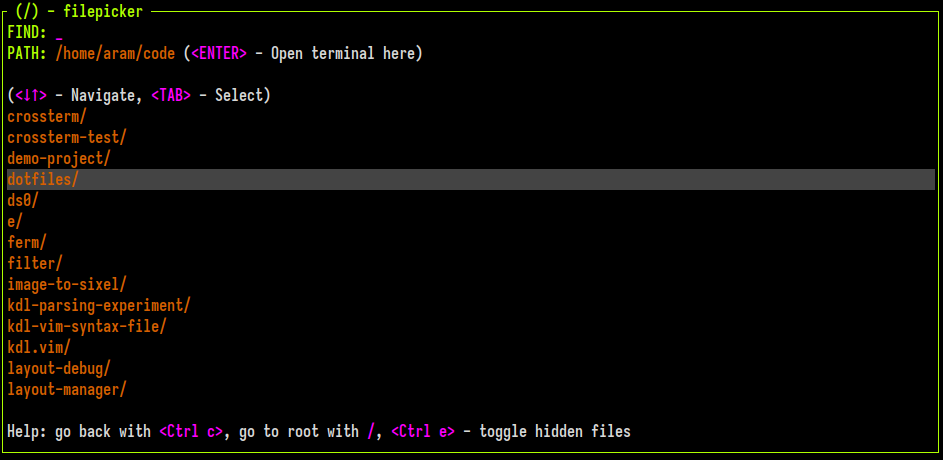
结合布局系统还能打造 IDE 体验——社区 strider 布局，左侧文件浏览器，右侧编辑器和命令窗格。
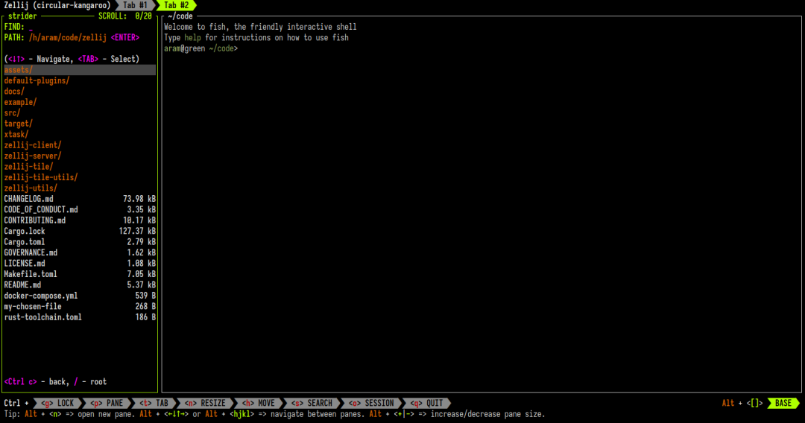
09 自定义布局：一键启动工作区。
Rust 开发可能需要这样的工作区：左边编辑器打开 src/main.rs，右边三个窗格分别跑 cargo check、cargo run、cargo test。
tmux 里得写一堆 shell 脚本。Zellij 运用 KDL也就是声明式语言来写布局文件：
layout {
pane split_direction="vertical" {
pane edit="src/main.rs"
pane {
pane command="cargo check"
pane command="cargo run"
pane command="cargo test"
}
}
}
保存布局文件，比如 rust-layout.kdl。
下一次启动就会读取这个配置给你一个完整的工作区。
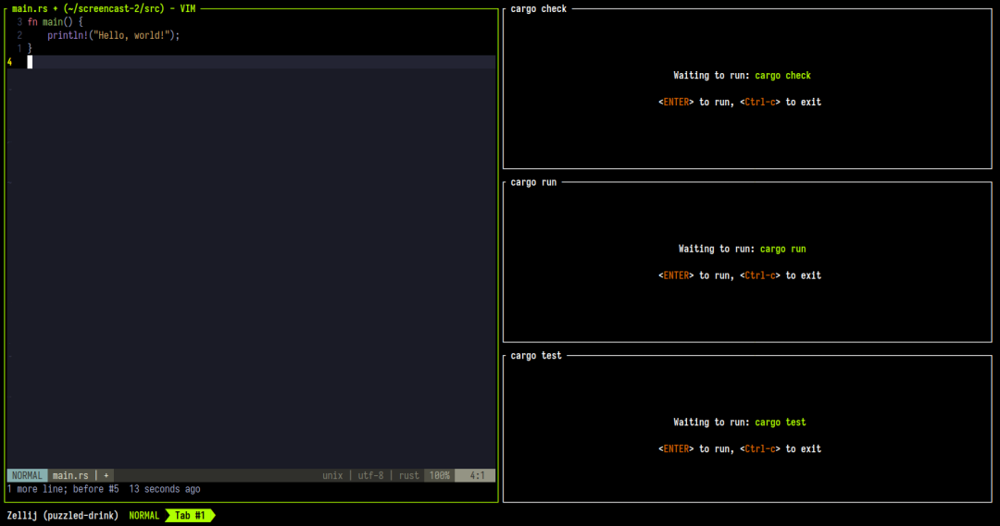
当然有几个注意点也给大家提一下 。
01 性能敏感的场景要注意一下，tmux 一个会话大概 6MB，Zellij 要 80MB 左右，差了十几倍。
02 Zellij常用的功能都有了，但你已经重度依赖某些 tmux 插件，用起来还是有些不便 。
03 已经玩熟 tmux 的人，切过来会有个适应期。比如 Ctrl+t 在 tmux 是前缀键，在 Zellij 里是切标签页，一开始容易手滑。
看到这里，可能很多朋友已经迫不及待了。
最简单就是复制下面命令直接装。
bash <(curl -L https://zellij.dev/launch)
如果想要离线安装包也有的。
可以去 GitHub 下载对应平台的预编译版本。
Linux、macOS、Windows 都能用。
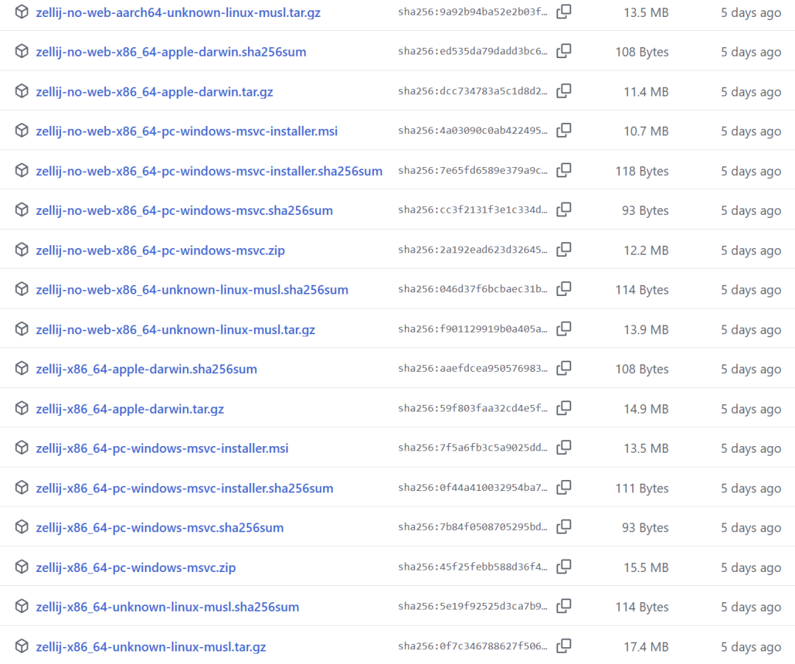
写在最后
玩终端工具差不多 10 年了，从最早的 screen 到 tmux，再到现在的 Zellij 。
tmux 很经典。
稳得一批，服务器上跑个几年都不带出问题。
新的 Zellij 也带来了新的功能。
比如直接编辑滚动缓冲区，能直接用编辑器搜，效率直接拉满。
工具这东西就是这样，一直在进化。
当年觉得 tmux 已经够好了，现在发现还能更顺手。
说不定过两年又冒出个新东西，把 Zellij 也给卷了。
但有一点不会变：让工具更好用、更低门槛 。
说说你的看法，评论区聊聊 。
项目基于 MIT 协议开放，感兴趣的同学可以去 GitHub 仓库看看源码和文档。
开源地址：https://github.com/zellij-org/zellij
既然看到这了，欢迎随手点赞、在看、转发，也可以给我个星标⭐，接收最新的文章，我们下期见！